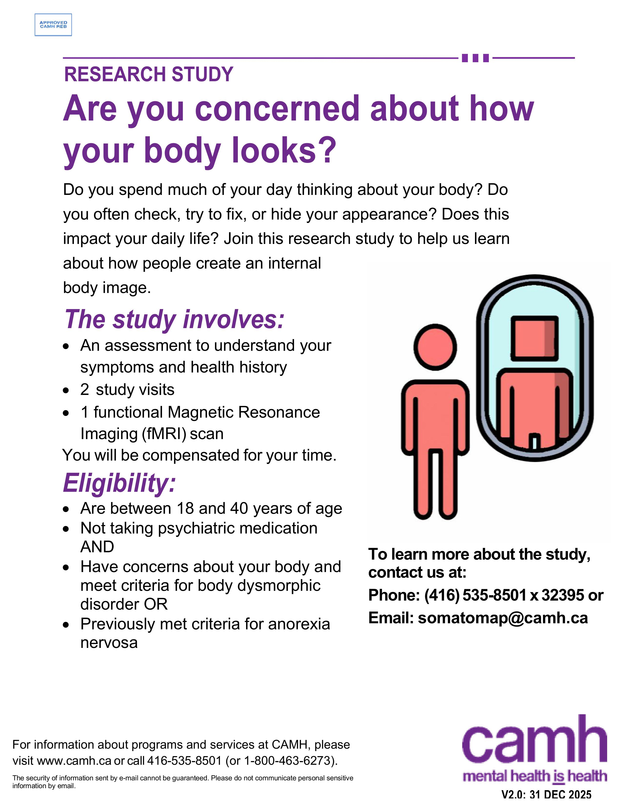

Creating a comprehensive brain model of body image in health and disease
Having an unclear or mistaken view of your own body size or shape is a key part of body image disorders, such as body dysmorphic disorder (BDD), anorexia nervosa (AN), and other eating disorders. People with AN or BDD often feel very upset about their appearance. This can lead to frequent checking, strict calorie cutting, too much exercise, or even unnecessary cosmetic procedures. However, we still do not fully understand how people form an image of their own bodies in the first place.
The goal of this study is to learn what causes people to have an inaccurate internal picture of their body. We want to understand how the brain, eye movements, and emotions affect body size perception in people with AN, people with BDD, and people without body image problems. We also want to learn why people differ in how they estimate body size, and how these differences relate to body image concerns and other personal or clinical factors.
We are looking for participants ages 18 to 40 who have been diagnosed with AN, meet criteria for BDD, or are healthy volunteers. The study includes two visits.
Participation in this study involves: - Completing clinical interview and assessments, - 1 functional Magnetic Resonance Imaging (fMRI) scan
You will be compensated for your time should you wish to participate and complete all study visits.
If you are interested in participating in this study, or if you would like to get more information, please contact the research team at somatomap@camh.ca